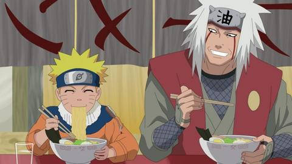

Media
Most Loyal Customer

Naruto Uzumaki
Ramen Ichiraku is Naruto Uzumaki's favourite dining establishment. He eats there regularly – usually stopping by between missions – and he is often joined by Iruka Umino, another frequent customer. Because Naruto has been a loyal customer for most of his life, Teuchi and his daughter, Ayame, were among the few people in Konoha not to treat Naruto with animosity during his youth. Naruto takes Hinata Hyūga to Ramen Ichiraku for their first date; in the anime, this in turn causes Hinata to become a regular customer, to the point that she has won at least one of its eating contests, a record that Choji and Chocho Akimichi have yet to break.